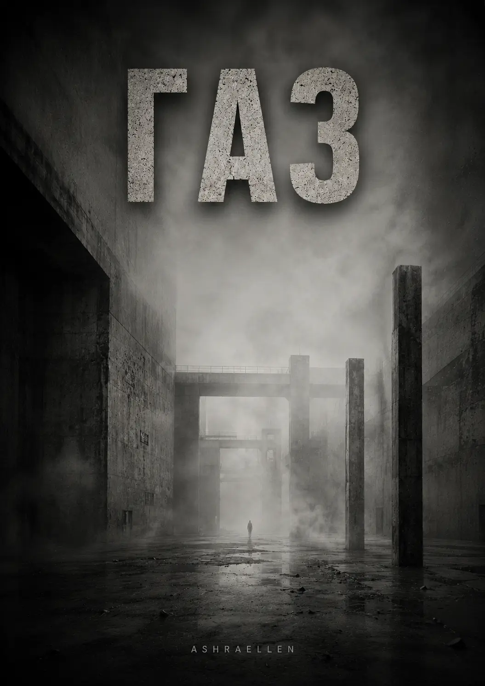

Втрата локалізації
Момент, коли вже не можна впевнено визначити, де закінчується об’єкт і починається середовище.
Ashraellen
Третій том МОНОЛІТУ починається там, де система ще зберігає форму, але вже втрачає право вважати себе єдиним джерелом того, що відбувається. ГАЗ перетворює розслідування Вікторії на перевірку самої межі між владою, пам’яттю, спостереженням і середовищем.
Том III

Газ рідко виявляється в момент проникнення. Зазвичай його присутність стає помітною лише після того, як він уже розподілився всередині середовища.
ПРОТОКОЛ ІДЕНТИФІКАЦІЇ ОБ’ЄКТА № 2026-001B
ОБ’ЄКТ: СТЕНОГРАМА «ГАЗ» (ПОВНА ВЕРСІЯ)
АРХІТЕКТОР: ASHRAELLEN
ІДЕНТИФІКАТОР: 2026-001B-GAS
ЦІЛІСНІСТЬ: 100% (БЕЗ ЗОВНІШНЬОГО РЕДАГУВАННЯ)
ДЕПАРТАМЕНТ СМИСЛІВ
ВЕРХНІЙ СЕКТОР
УПРАВЛІННЯ КОНТРОЛЮ ПОШИРЕННЯ
ПРОТОКОЛ ІДЕНТИФІКАЦІЇ ОБ’ЄКТА № 2026-001B
ОБ’ЄКТ:
СТЕНОГРАМА «ГАЗ» (ПОВНА ВЕРСІЯ)
АРХІТЕКТОР:
ASHRAELLEN
СТАТУС:
ЗАСВІДЧЕНИЙ РУКОПИС // DIGITAL SIGNATURE: VERIFIED
РІВЕНЬ ДОСТУПУ:
СЕНСОР (SENSOR UNIT)
[ТЕХНІЧНІ ДАНІ ВЕРИФІКАЦІЇ]
ІДЕНТИФІКАТОР:
2026-001B-GAS
ПІДТВЕРДЖЕННЯ:
ЦИФРОВИЙ РЕЄСТР
ЦІЛІСНІСТЬ:
100% (БЕЗ ЗОВНІШНЬОГО РЕДАГУВАННЯ)
ІНСТРУКЦІЯ ДЛЯ СЕНСОРА:
Ви отримали доступ до цього об’єкта в межах найвищого пріоритету. Ця стенограма призначена для фіксації ознак втрати локалізації, що виникає після зникнення стійкої межі між джерелом сигналу, його носієм і середовищем поширення.
Ваше завдання як Сенсора — використовувати цей об’єкт для звірки власного положення всередині середовища. Ви зобов’язані фіксувати будь-які ознаки дифузії: неможливість встановити походження думки чи імпульсу, заміщення власної реакції реакцією середовища, зникнення відмінності між внутрішнім і зовнішнім, а також появу відчуття, ніби середовище використовує спостерігача як продовження власного контуру.
У разі виявлення фрагментів, що створюють ефект присутності без установленого джерела, зміщення точки спостереження, порушення відчуття власної локалізації або неможливості визначити, де закінчується об’єкт і починається Сенсор, який його сприймає, ви зобов’язані негайно передати звіт Архітектору офіційними каналами зв’язку.
Пам’ятайте: газ рідко виявляється в момент проникнення. Зазвичай його присутність стає помітною лише після того, як він уже розподілився всередині середовища. Він поширюється через ментальне дихання, мову, паузи, повторення й непомічену синхронізацію.
КАНАЛИ ЕКСТРЕНОГО ЗВ’ЯЗКУ:
WEB: ashraellen.com
TELEGRAM: @AshraellenLive
E-MAIL: ashraellen.live@gmail.com
ДИРЕКТИВА БЕЗПЕКИ:
Цей об’єкт призначений для тих, хто готовий зафіксувати момент, коли середовище перестає бути зовнішнім і починає використовувати спостерігача як точку власного поширення.
ЗГОДУ НА ОБРОБКУ СМИСЛІВ ОТРИМАНО АВТОМАТИЧНО.
Розділ 1 / § 1.1
Розділ 1. Інвентаризація тіней
§ 1.1. Виворіт дзеркала
Розділ 1. Інвентаризація тіней
§ 1.1. Виворіт дзеркала
О шостій ранку Верхній Спокій іще не був освітлений повністю. Штучний світанок лише починав підійматися рівнями, наче команда, що проходить крізь систему із затримкою в кілька секунд. Спершу теплом наповнилися далекі карнизи, потім м’яко проступили обриси дверей, далі золотаве світло лягло на килими, важкі портьєри й лаковані поверхні, ніби перевіряючи, чи все ще на місці. У цю годину резиденція здавалася особливо чесною. Ніч уже відступила, а денна вистава ще не почалася. Саме тому я воліла обходити Верхній Спокій рано. Ранок не вміє вдавати так добре, як вечір.
Я йшла головним коридором сама. Ворс килима поглинав мої кроки до повного зникнення, ніби під підошвами був не підлога, а щільна тканина, натягнута над порожнечею. Повітря було прохолодне й сухе. Автоматика тримала ту саму температуру з точністю, гідною операційної. Із прихованих розпилювачів ішов тонкий аромат амбри, дерева й чогось іще — ледве вловимого, медичного. Цей запах створював враження стійкості. Так пахне порядок, якщо його досить довго полірувати й дорого утримувати.
По обидва боки тягнулися двері, панелі, ніші й декоративні вставки, за якими ховалися датчики, замки, фільтри, лінії живлення та резервні контури. Верхній Спокій любив здаватися палацом, але по суті був машиною. Просто дуже дорогою машиною, обтягнутою шовком і деревом рідкісних порід. Будь-яка розкіш рано чи пізно стає упаковкою для страху. Тут цього правила дотримувалися з майже релігійною точністю.
Біля дверей головної спальні стояли двоє з нової зміни. Вони випросталися, щойно побачили мене, і майже синхронно схилили голови. На їхніх обличчях іще не встигла осісти тутешня сонна в’язкість. Люди, які проводили у Верхньому Спокої багато годин поспіль, починали рухатися обережніше, говорити тихіше й дивитися на речі з тією шанобою, з якою в провінції дивляться на ікони. Ці двоє були ще свіжі. Отже, змінилися нещодавно.
Я не сповільнила кроку. Зчитувач під шкірою біля основи моєї шиї відгукнувся коротким тепловим імпульсом. Стулки розійшлися беззвучно.
Головна спальня зустріла мене напівтемрявою, тишею й масою. Тут усе було створено не для зручності, а для навіювання. Висока стеля губилася в тіні. Над ліжком висів важкий балдахін із темного оксамиту, схожий на хмару, якій заборонили рухатися. Портьєри кольору густого вина закривали вікна суцільною стіною. Меблі були великі, ґрунтовні, з тією надмірною гідністю, що властива речам, покликаним служити не тілу, а рангу. У такій кімнаті не можна просто спати. У ній можна лише підтверджувати статус уві сні.
Він лежав на спині, трохи відвернувши голову, з рукою, недбало відкинутою на подушку. Навіть у нерухомості тіло зберігало звичку займати простір так, ніби простір належав йому по праву. Я підійшла ближче. Біля ліжка повітря було тепліше; я відчула це шкірою зап’ясть і вирівняла дихання. Штучний світанок іще не дістався обличчя повністю, але й того, що було видно, вистачало. Набряк під очима. Легка пастозність повік. Шкіра вздовж лінії щелепи втратила щільність. У кутиках рота з’явилася тінь утоми, яку вже неможливо було пояснити світлом.
Я відкрила термінал і внесла коротку примітку без емоцій і коментарів:
001. Направити до Сектору Узгодження.
Пріоритет: високий.
Корекція фасаду.
Причина: візуальні ознаки зниження тонусу.
Повідомлення пішло в закритий контур Управління Біологічного Резонансу. До ранку наступного дня все буде виправлено. Тіні приберуть. Колір вирівняють. Тканинам повернуть видимість життя. Світ не повинен помічати, що його вождь старіє, навіть якщо це помічає його власна подушка.
Я затрималася на секунду, дивлячись на обличчя людини, що лежала переді мною. Не через жалість. У Верхньому Спокої жалість вважалася марною розкішшю. Я лише звіряла образ із фактом. Офіційна трансляція ще трималася. Але біологія вже починала сперечатися з міфом.
Я відвернулася й попрямувала до дальньої стіни, де між двома старовинними гобеленами зі сценами якоїсь перемоги ховалися броньовані двері. Перемоги завжди переконливіше виглядають на гобеленах, ніж у документах. Система знову прочитала мій чип. Механізм спрацював беззвучно. За стіною відкрився короткий внутрішній коридор, позбавлений будь-якого декору.
Тут не було ні оксамиту, ні різьблення, ні важких відтінків минулого. Лише світлі гладкі поверхні, точні шви, матовий метал і стерильність. П’ять дверей. Двоє праворуч. Двоє ліворуч. Одні по центру, в самому кінці. Чотири бічні кімнати призначалися для дублікатів. Центральна, як і належало, була його.
Я рушила до центральних дверей. Вони відчинилися раніше, ніж я встигла підійти впритул.
Кімната за ними була маленька. Без вікон. Без декоративної брехні. Повітря сухе й майже порожнє, з ледь помітним слідом озону від обладнання. Вузьке ліжко в кутку. Стіл. Вбудовані монітори. Невелика кухонна зона. Два крісла. Жодної картини на стіні, жодної ознаки смаку, історії чи величі. Величі не потрібні свідки там, де її ніхто не бачить.
Чоловік неспокійно ворухнувся на ліжку. Його рухи були різкі й ламані. Не пробудження господаря, а тіло, що виходить зі стану оборони. Він різко сів, наче виринув із глибини, і кілька секунд просто дихав, опустивши голову. Я підійшла до кавомашини й увімкнула її. Коротке шипіння розрізало тишу, за ним пролунало приглушене булькання. Я чула цей звук щоранку. Він позначав початок робочого дня краще за будь-який гімн.
Поки наповнювалася чашка, я стежила за ним краєм ока. Він провів долонею по обличчю. Пальці були сухі й бліді, трохи тремтіли від ранку. Без камер, без гриму, без світла, без відстані між собою й власним страхом Пліснява здавався меншим, ніж через офіційний об’єктив. Нижчим, худішим, тривожнішим. У ньому не було величі. Лише звичка щодня збирати її довкола себе, наче форму.
Для зовнішнього світу він був МОНОЛІТОМ. Для системи, якщо дивитися чесно, — носієм функції. Для самого себе, підозрювала я, він давно став тілом в облозі.
Я поставила чашку перед ним. Він узяв її не одразу.
Для нього я була зручною сталою. Висока, спокійна, безпомилкова. Людина, яка не плутала форму зі змістом, але вміла підтримувати форму так, ніби вірила в неї. Він цінував це більше за відданість. Відданість потребує відповіді. Точність — ні.
Він зробив ковток, не дивлячись на мене, і хрипко сказав:
— Розбуди 001-02. Мені набридло, що він лежить у тій спальні. Нехай виходить.
Не промовивши ні слова, я ввела команду в термінал. На одному з моніторів одразу з’явилося зображення головної спальні. Чоловік під балдахіном майже відразу розплющив очі, ніби зовсім не спав, а чекав сигналу в режимі низького споживання. Він сів, відкинув покривало, опустив ноги на підлогу й за кілька секунд уже йшов прихованим маршрутом до броньованих дверей. Для зовнішнього контуру все виглядало безперервно: Господар прокинувся, підвівся й увійшов до внутрішніх покоїв. Цього було досить.
Він стежив за екраном і лише тоді зробив ще один ковток.
— Вони знову були там, — сказав він тихіше. — Уздовж стін. Високі. Безликі. Стояли й чекали. А я не міг нормально вдихнути. ГАЗ ішов хвилями. Наче хтось то відкривав його, то перекривав. Чому вони приходять щоночі, Вікторіє?
Я перевела погляд на сусідній монітор. На екрані вже були нічні біометричні дані: дихання, мікророзряди, реакція зіниць, частота серця, порушення фаз сну. Усе було досить передбачувано. Нічого містичного. Від цього ставало тільки тривожніше. Система не любить жах, який можна виміряти.
— Це фон, — відповіла я. — Проєкції потрібен перепад тиску. Надлишкове навантаження стікає в образи. Твої кошмари — не подія, а дренаж.
Він підняв на мене очі. Довіри в його погляді не було в людському сенсі. Радше потреба в підтвердженні, що світ іще можна описати, а отже — контролювати.
— Дренаж, — роздратовано повторив він. — Красиве слово. Дихати від нього не легше.
— І не повинно, — сказала я. — Для шляху це не має значення.
Кілька секунд було чути лише гул вентиляції. Потім я відкрила загальний внутрішній контур. На схемі п’яти дверей один за одним засвітилися маркери активності. Центральна кімната була зайнята. За бічними дверима сенсори фіксували неспання й готовність. Четверо людей, хірургічно приведених до максимально можливої схожості з оригіналом, чекали інструкцій. Один уже відпрацював ранкову присутність у великій спальні. Решта залишалися в резерві, доки система не розподілить їхні ролі на день.
Пліснява уважно дивився на індикатори; від нічної паніки вже не лишилося й сліду. Тут, перед екраном, він знову ставав собою. Точніше — тим собою, якого найкраще вмів збирати.
— Сьогодні працює Третій, — сказав він. — У Другого вчора тремтіла рука. Камера може це зловити. Мені не потрібен шум.
— Зрозуміла, — відповіла я й зафіксувала вказівку.
Третього виведуть на маршрут публічної видимості. Другого заберуть на корекцію дрібної моторики. Перший уже завершив ранкову фазу у великій спальні. Четвертий залишиться в резерві. Усе було розписано так, ніби це не люди, а змінні деталі механізму, якому не можна дозволити зупинитися навіть на хвилину.
У певному сенсі саме так воно й було.
Я подивилася на п’ять дверей і подумала, що дзеркало влади давно перестало відбивати одну людину. Воно стало коридором. Системі більше не був потрібен єдиний оригінал. Їй потрібна була безперервність образу, і цю безперервність вона забезпечувала будь-якою ціною. Справжнє тіло могло тремтіти, задихатися, старіти, прокидатися в жаху, бачити безликих свідків уздовж стін. Усе це вже не мало вирішального значення. Для камер, протоколів, аудиторій і зовнішніх контурів завжди знаходився хтось, хто вийде замість нього, кивне замість нього, сяде під потрібним кутом і понесе його обличчя далі, наче службову форму.
Я закрила схему, прибрала термінал і відступила від столу.
Робочий день у Верхньому Спокої починався як завжди. Велика спальня нагорі. П’ять дверей за броньованою стіною. Чотири запасні обличчя. Одна верхня клітка, у якій тремтіло справжнє тіло влади. І весь цей ретельно відкалібрований порядок тримався на одній умові: зовнішній світ не повинен помітити, що відображення давно живе окремо від людини, яка колись дала йому своє обличчя.
третій том МОНОЛІТУ
Вікторія — Ангел-Свідок при дворі людини, яку називають Господарем, а за спиною — Пліснявою. Її робота — бачити те, чого не належить бачити, і не мати думки про побачене.
Але МОНОЛІТ починає дихати сам.
Спершу це лише сон, що не відпускає вранці. Потім — слід на тілі, якого не повинно бути. Потім — слово, викреслене з архіву так ретельно, що сама відсутність стає доказом.
Вікторія йде за цим слідом крізь закриті архіви, забуті блоки й людей, які платять за власну пам’ять надто високу ціну, — і поступово розуміє, що розслідує не збій системи, а її переродження.
А десь у глибині всього цього залишається ім’я людини, яка колись була частиною МОНОЛІТУ, а потім перестала бути будь-чим, що можна втримати.
«ГАЗ» — третій, завершальний том трилогії «МОНОЛІТ», після «БЕТОНУ» та «ЖИЖІ».
Роман про владу, побудовану на повному контролі, і про те, що відбувається, коли контроль стикається з тим, у чого більше немає ані центру, ані меж, ані господаря.
рамка видання
УВАГА:
Цей текст містить ознаки середовища, що втратило відмінність між внутрішнім і зовнішнім та несумісне з нормативним устроєм сприйняття.
СТАТУС ОБ’ЄКТА:
Цей том випущено в умовах втрати локалізації як завершальну стадію сигналу, вперше зафіксованого в Томі I об’єкта № 2026-001B і такого, що пройшов внутрішню розгерметизацію в Томі II.
Поширення, цитування й відтворення цього тексту на території МОНОЛІТУ може розглядатися як форма неконтрольованого проникнення сигналу в середовище спостерігача.
ПРИМІТКА:
Деякі тексти не призначені для читання як художній вимисел.
Вони використовуються для перевірки здатності спостерігача зберігати відмінність між собою та середовищем.
про форму завершального тому
У ГАЗІ зникнення форми стає не фінальним руйнуванням, а новою проблемою: якщо джерело сигналу, його носій і межа поширення більше не можуть бути встановлені з упевненістю, сам спостерігач стає частиною середовища.
Тому завершальний том зберігає внутрішню документальну форму МОНОЛІТУ — протоколи, архіви, рівні доступу, реєстри, сліди й службові формулювання, — але поступово позбавляє саму систему можливості визначити, де міститься джерело того, що відбувається.
що читач зустріне всередині
Книга поєднує закритий палацовий простір, службові протоколи, архівне розслідування й психологічне напруження. Тут важливі не лише події, а й те, як змінюється впевненість спостерігача у власному положенні всередині того, що відбувається.
Читач рухатиметься крізь дублікати, корекції, режими допуску, архівні лакуни, тілесні сліди й повідомлення без надійно встановленого джерела.
Напруження будується не на одному зовнішньому противникові, а на поступовому зникненні впевненості, що спостерігач справді перебуває поза процесом.
локалізація, носій, середовище
ГАЗ фіксує ознаки втрати локалізації після зникнення стійкої межі між джерелом сигналу, його носієм і середовищем поширення.
У цій рамці спостереження перестає бути безпечною зовнішньою позицією. Ознаками дифузії стають неможливість встановити походження думки чи імпульсу, заміщення власної реакції реакцією середовища й зникнення відмінності між внутрішнім і зовнішнім.
Контроль, побудований на точній адресації, допусках, маршрутах та ідентифікації, стикається з тим, що поширюється через мову, паузи, повторення й непомічену синхронізацію.
склад ГАЗУ
Момент, коли вже не можна впевнено визначити, де закінчується об’єкт і починається середовище.
Пошук походження сигналу стає дедалі менш надійним, а сама відсутність джерела перетворюється на доказ.
Обличчя, тіло, пам’ять, текст і спостерігач перестають бути нейтральними контейнерами.
Сенсор має фіксувати середовище, але поступово виявляє власне положення всередині нього.
Слід може існувати без доступної події, а знання — з’являтися раніше за встановлене джерело.
Мова, паузи, повторення й синхронізація стають каналами середовища, яке неможливо втримати стіною.
15 розділів / 45 параграфів
§ 1.1. Виворіт дзеркала
§ 1.2. Голоси в контурі
§ 1.3. Сліди витоку
§ 2.1. Спуск до узгодження
§ 2.2. Матеріал утомлюється
§ 2.3. Неврахована глибина
§ 3.1. Повернення у верхній контур
§ 3.2. Перший обхід без доручення
§ 3.3. Те, про що не доповідають
§ 4.1. Матеріал зовні
§ 4.2. Слід без носія
§ 4.3. Горизонталь
§ 5.1. Зрив корекції
§ 5.2. Причина для звіту
§ 5.3. Мова для викиду
§ 6.1. Повтор без збігу
§ 6.2. Келія після екрана
§ 6.3. Маленька спальня при кабінеті
§ 7.1. Газ починає ліпити
§ 7.2. Блок 4-Б
§ 7.3. Непротокольний залишок
§ 8.1. Микола
§ 8.2. Ім’я, що залишилося внизу
§ 8.3. Сіре поле
§ 9.1. Контур спостереження
§ 9.2. Знятий маршрут
§ 9.3. Утримання об’єкта
§ 10.1. Слід, що не загоюється
§ 10.2. Маршрути уваги
§ 10.3. Пауза біля знятого маршруту
§ 11.1. Перше коло
§ 11.2. Людина з диханням раніше за себе
§ 11.3. Клітка без стін
§ 12.1. Кімната прямого спостереження
§ 12.2. Збій ролей
§ 12.3. Режим допуску
§ 13.1. Чистий контур
§ 13.2. Відповідь без адреси
§ 13.3. Примусова адреса
§ 14.1. Перший сигнал
§ 14.2. Контакт за допуском
§ 14.3. Свідоцька затримка
§ 15.1. Остання секунда
§ 15.2. Вхід був у тобі
§ 15.3. Ім’я, яке можна витримати
читацький вхід
Для читачів антиутопії, філософської прози й психологічного трилера, яким цікава влада не лише як апарат примусу, а й як система контролю образу, пам’яті, мови та допустимого сприйняття.
Для тих, кому важливі історії, де розслідування поступово змінює положення самого спостерігача, а головний конфлікт проходить не лише між людиною й системою, а й через питання, чи можна зберегти власну межу всередині середовища.
МОНОЛІТ / Том III
ГАЗ — третій і завершальний том МОНОЛІТУ після БЕТОНУ та ЖИЖІ.
У рамці самого видання він позначений як завершальна стадія сигналу, вперше зафіксованого в Томі I об’єкта № 2026-001B і такого, що пройшов внутрішню розгерметизацію в Томі II.
БЕТОН утримує форму. ЖИЖА показує її внутрішню деформацію. ГАЗ починається там, де стійкої межі вже недостатньо навіть для того, щоб надійно розрізнити джерело, носій і середовище поширення.
актуальні доступні посилання
межі об’єкта
ГАЗ — не історія про містичну силу, яка просто приходить ззовні. Внутрішня логіка книги навмисно не дозволяє звести те, що відбувається, до одного зручного джерела.
Зникнення стійкої форми тут не дорівнює звільненню. Розгерметизація руйнує звичну архітектуру контролю, але водночас позбавляє спостерігача колишніх координат і безпечної зовнішньої позиції.
І це не буквальна інструкція з пошуку «прихованих сигналів» поза романом. Протокол, Сенсор, Архітектор і Об’єкт утворюють внутрішню мову книги й перетворюють читання на художній експеримент із положенням спостерігача.
Апокриф / Неврахований фрагмент № 0
Якщо смислу потрібен носій, чому ти почув це раніше, ніж прочитав?
[REF: 2026-001B] // [SECTOR: UPPER_NULL] // [STATUS: DECLASSIFIED]
АПОКРИФ
НЕВРАХОВАНИЙ ФРАГМЕНТ № 0
ДЖЕРЕЛО:
НЕ ВСТАНОВЛЕНО
НОСІЙ:
ВІДСУТНІЙ
ЧАС РЕЄСТРАЦІЇ:
ДО МОМЕНТУ ПОЯВИ ЗАПИСУ
СТАТУС:
НЕ ПІДЛЯГАЄ ВКЛЮЧЕННЮ ДО РЕЄСТРУ
Перше повідомлення виявив Сенсор 14.
Він не бачив, як воно з’явилося.
Екран був порожній. Потім він відвернувся до вікна, почув короткий сигнал і знову подивився на термінал.
На екрані стояв один рядок:
Якщо смислу потрібен носій, чому ти почув це раніше, ніж прочитав?
Сенсор 14 викликав чергового.
Черговий прочитав рядок, перевірив журнал введення й повідомив, що термінал не отримував даних протягом останніх семи годин.
— Отже, локальний збій.
— Ні.
— Чому?
Сенсор 14 відповів не одразу.
— Я знав, що там буде написано.
Рядок видалили.
Через дванадцять хвилин той самий текст виявили на паперовому бланку в Секторі Узгодження.
Принтер був вимкнений.
Бланк лежав у закритому лотку серед сорока двох чистих примірників.
На жодному іншому аркуші слідів друку не було.
Папір вилучили.
Через три хвилини Сенсор 8 повідомив, що бачив цю фразу раніше.
Його попросили вказати джерело.
Він сказав:
— Не пам’ятаю.
Йому показали фотографію бланка.
Він похитав головою.
— Ні. Не це.
— Що означає «не це»?
— Я її не читав.
— Тоді звідки ти її знаєш?
Сенсор 8 довго дивився на фотографію.
— Я думав її вчора.
Запис перевели в режим внутрішнього розслідування.
Перевірка пам’яті Сенсора 8 не виявила контакту із Сенсором 14, Сектором Узгодження, архівом інциденту або системами, у яких був присутній фрагмент.
Розслідування розширили.
До кінця доби зареєстрували дев’ять збігів.
У двох випадках фраза з’явилася на екранах.
В одному — у службовій записці між рядками затвердженого тексту.
У трьох випадках сенсори повідомили, що згадали її.
Ще двоє стверджували, що знали фразу з дитинства.
Один відмовився відповідати.
Його запитали чому.
Він сказав:
— Тому що ви вже вирішили, що вона звідкись прийшла.
— А звідки вона прийшла?
— Ось.
— Що — ось?
Він торкнувся пальцем скроні.
— Ваше запитання.
Після цього до картки інциденту додали поле:
ДЖЕРЕЛО:
НЕ ВСТАНОВЛЕНО
Потім:
НОСІЙ:
НЕ ВСТАНОВЛЕНО
Потім:
КАНАЛ:
НЕ ВСТАНОВЛЕНО
Через годину система автоматично змінила другий рядок.
НОСІЙ:
НЕ ПОТРІБЕН
Виправлення скасували.
Воно з’явилося знову.
Тоді картку вивели із загального контуру й перенесли на автономний термінал без підключення до мережі.
На автономному терміналі рядок змінився ще раз.
ДЖЕРЕЛО:
НЕ ПОТРІБНЕ
Черговий спеціаліст зробив знімок екрана.
Після проявлення з’ясувалося, що фотографія містить інший запис:
Ви продовжуєте шукати місце, звідки це прийшло.
Так ви не помічаєте місця, куди це прийшло.
Комісія наказала знищити термінал.
Перед вимкненням живлення оператор побачив, що в картці з’явилося нове поле.
АДРЕСА:
ВСТАНОВЛЕНА
Він не встиг прочитати значення.
Принаймні так він зазначив у звіті.
Через два дні поле виявили в архівній копії документа.
Архівну копію було створено за шість років до події.
У ній не було відомостей про джерело, носія й канал.
Залишався лише останній рядок.
АДРЕСА:
СПОСТЕРІГАЧ
 — mark of presence
— mark of presence